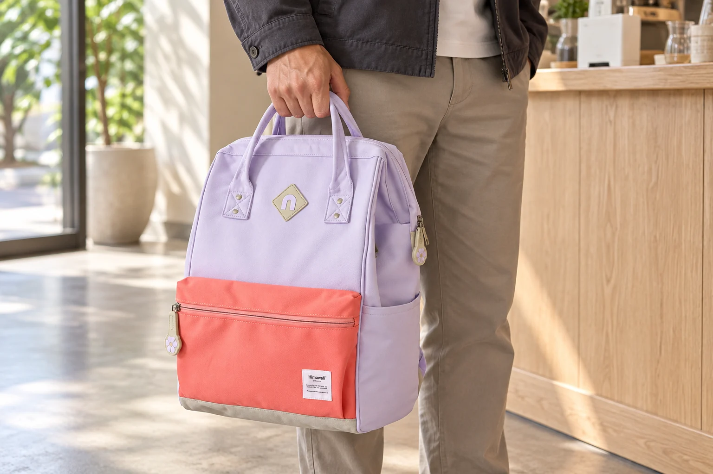
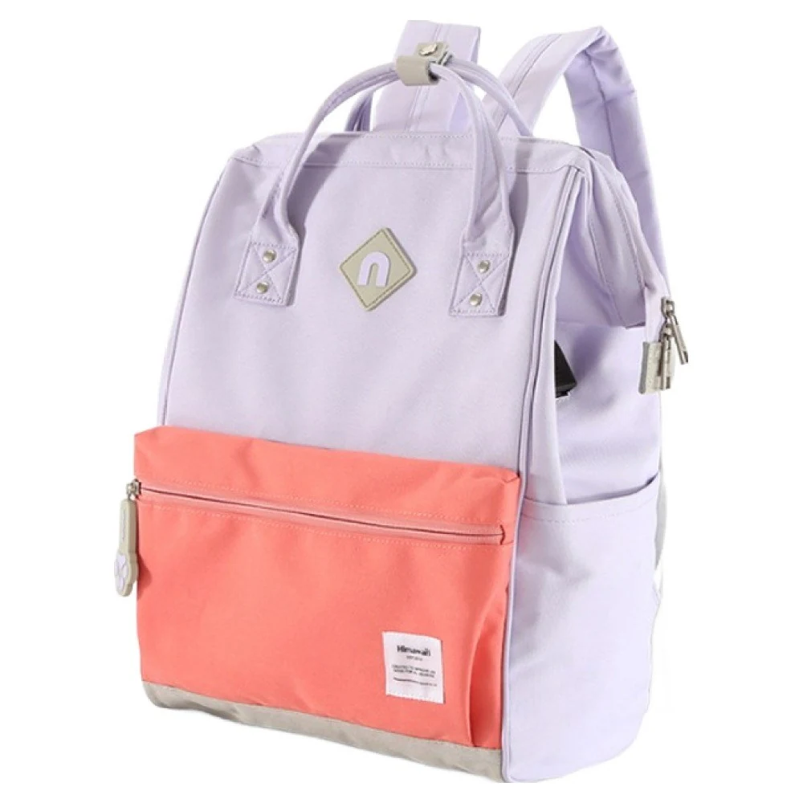
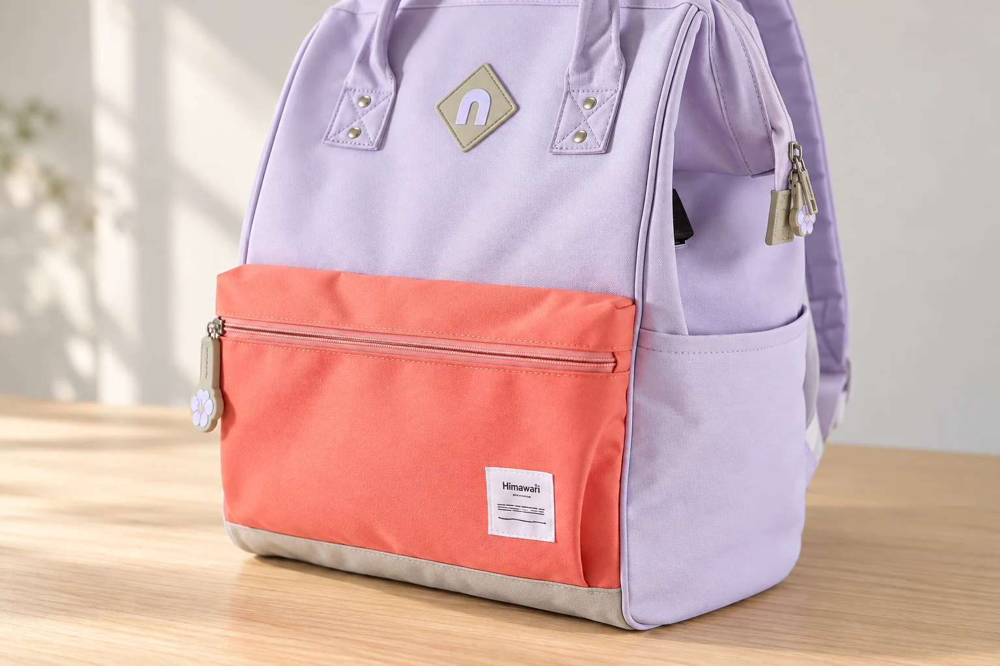

백팩 크기를 곱하면 리터 용량이 될까

백팩의 용량 항목이 비어 있으면 가로·세로·폭을 곱해 보고 싶어집니다. 센티미터로 적힌 세 숫자를 곱하고 1,000으로 나누면 리터라는 단위로 바꿀 수 있으니, 그 값이 가방의 용량처럼 느껴지기도 합니다. 단위 계산은 맞을 수 있습니다. 하지만 계산에 넣은 것이 바깥 치수라면, 그 결과가 가방 안에 실제로 담을 수 있는 양을 알려주는지는 다른 문제입니다.
No.9004 라벤더 코랄의 확인된 외부 크기는 가로 28 × 세로 40 × 폭 17cm입니다. 실제 정면 사진에는 둥근 윗모서리, 앞으로 나온 코랄색 포켓, 옆면의 주머니가 보입니다. 제품 정보의 용량 항목에는 별도 수치가 기재되어 있지 않습니다. 이 빈칸에 계산 결과를 넣기 전에, 세 숫자로 만든 도형과 사진 속 가방을 나란히 생각해 보겠습니다.
계산이 맞아도 답의 이름이 달라집니다
28 × 40 × 17을 계산하면 19,040입니다. 세 길이의 단위가 모두 cm이므로 결과의 단위는 cm³입니다. 1L는 1,000cm³이기 때문에 19,040cm³은 19.04L로 환산됩니다. 여기까지는 부피의 단위를 바꾸는 계산입니다. 중요한 것은 19.04L라는 값 앞에 어떤 대상을 적느냐입니다. 가로 28cm, 세로 40cm, 깊이 17cm인 직육면체의 부피라고 적으면 계산이 설명됩니다.
여기에 곧바로 ‘No.9004 수납 용량’이라는 이름을 붙이면 확인하지 않은 정보가 됩니다. 계산에서는 모든 높이에서 가로와 깊이가 일정한 상자를 가정했습니다. 반면 제품 사진의 위쪽은 곡선이고, 앞 포켓은 본체와 별도 윤곽을 만듭니다. 외부 치수가 어느 돌출부까지 포함하는지에 따라 숫자가 설명하는 바깥 범위도 달라질 수 있습니다. 단위가 리터로 바뀌었다고 측정 대상까지 내부 공간으로 바뀌지는 않습니다.

개인 비교표에 계산값을 남긴다면 ‘외부 치수로 만든 직육면체 환산값’이라고 충분히 설명해야 합니다. 다만 그 값을 상품 용량 칸에 복사하거나 다른 제품의 공식 리터 표기와 같은 열에 놓는 것은 피하는 편이 좋습니다. 서로 다른 종류의 수치를 한 줄에서 비교하면 계산이 자세할수록 오히려 같은 기준으로 측정했다는 인상을 줄 수 있습니다. 확인되지 않은 용량은 비워 두는 쪽이 자료의 의미를 보존합니다.
사진 속 곡선과 포켓을 빼거나 더하면 될까요
둥근 윗부분을 보고 계산값에서 조금 빼면 실제 용량에 가까워질 것 같기도 합니다. 하지만 사진만으로 곡선이 시작되는 높이와 내부 두께를 정확히 알기는 어렵습니다. 눈대중으로 일정 비율을 빼거나 모든 백팩에 같은 보정률을 적용할 근거가 없습니다. 안감과 구조가 차지하는 공간도 제품마다 확인해야 합니다. 계산에서 빠뜨린 조건이 있다는 사실을 아는 것과 그 조건의 수치를 아는 것은 다릅니다.
앞 포켓의 부피를 따로 계산해 더하는 방법도 같은 문제가 있습니다. 폭 17cm가 앞 포켓의 돌출을 포함한 값인지 확인되지 않았다면 이미 포함된 범위를 다시 셀 수 있습니다. 반대로 포켓의 정면 넓이를 알아도 실제 안쪽 깊이와 입구의 열림 범위는 남습니다. 사진에 보이는 코랄색 면 전체가 같은 깊이의 상자라고 가정할 수는 없습니다. 포켓을 많이 나누어 계산한다고 측정 정보가 새로 생기지는 않습니다.
서로 맞닿은 칸에 물건을 넣었을 때에는 원단이 어느 쪽으로 움직이는지도 살필 부분입니다. 빈 포켓 하나의 모습과 본체를 채운 상태의 모습이 항상 같다고 미리 정할 수 없습니다. 이 글의 사진은 외곽과 포켓의 위치를 설명하는 자료입니다. 실제로 내용물을 채워 용량을 측정한 장면이나 모든 칸을 동시에 시험한 결과로 읽지 않습니다.

같은 리터 수라도 같은 모양은 아닙니다
가방이 아닌 단순한 상자를 예로 들면 차이가 또렷합니다. 가로 20 × 세로 40 × 깊이 25cm인 상자와 가로 25 × 세로 40 × 깊이 20cm인 상자는 각각 20,000cm³, 즉 20L입니다. 이 두 수치는 이해를 위한 가상의 도형이며 판매 중인 제품의 사양이 아닙니다. 부피는 같아도 하나는 더 좁고 깊으며, 다른 하나는 더 넓고 얕습니다. 리터 하나로 물건의 놓일 방향까지 정할 수 없는 이유입니다.
단단한 파일을 세워 둘 사람에게는 가로와 세로의 관계가 중요하고, 두꺼운 케이스를 담을 사람에게는 앞뒤 방향이 중요할 수 있습니다. 여기에 실제 가방에서는 입구를 통과하는 조건이 더해집니다. 어떤 물건이 들어간다는 판단은 필요한 길이를 각각 확인해야 가능합니다. 리터 값이 큰 후보라도 그 물건에 필요한 한 방향이 충분한지는 따로 살펴야 합니다. 용량 비교와 형태 비교를 함께 해야 하는 이유가 여기에 있습니다.
No.9004의 노트북 수납칸 표기는 가로 26 × 세로 27.5cm이며 두께는 미기재입니다. 이 숫자를 외부 폭 17cm와 합쳐 하나의 내부 공간을 만들 수도 없습니다. 서로 다른 위치에서 얻은 치수이기 때문입니다. 해당 칸을 쓸 계획이라면 필요한 두께와 입구 정보를 그 칸 기준으로 확인합니다. 표에 있는 숫자를 모아 빈칸을 계산하는 방식보다, 같은 공간의 조건을 확인하는 편이 정확합니다.
용량 항목의 빈칸을 남겨 두고 비교하기
용량을 확인하고 싶다면 모델과 옵션을 먼저 특정하고, 공식 리터 표기와 그 표기가 가리키는 범위가 있는지 묻습니다. 본체만인지 바깥 포켓을 포함하는지처럼 비교에 영향을 주는 조건도 함께 확인할 수 있습니다. 답을 받지 못한 상태에서 다른 판매 페이지의 숫자를 가져오거나 비슷한 모양의 모델 값을 대신 쓰지는 않습니다. 같은 이름처럼 보여도 크기 구분과 구성이 다를 수 있습니다.
당장 후보를 줄일 때에는 확인된 외부 가로·세로·폭을 같은 방향으로 놓고 비교할 수 있습니다. 책상 옆에 놓일 바깥 규모, 자신이 선호하는 넓이와 깊이, 실제로 쓸 입구에 관한 질문이 남습니다. 용량이 비어 있어도 비교를 시작할 자료는 있습니다. 19.04라는 계산 결과보다 그 숫자가 무엇을 계산한 값인지 적을 수 있는지가 먼저입니다. 외부 크기는 외부 크기로 남겨 두어야 가방의 다른 정보와 섞이지 않습니다.